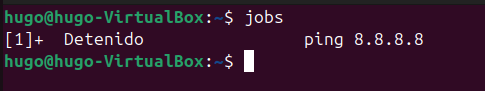
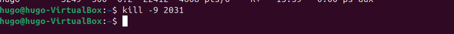
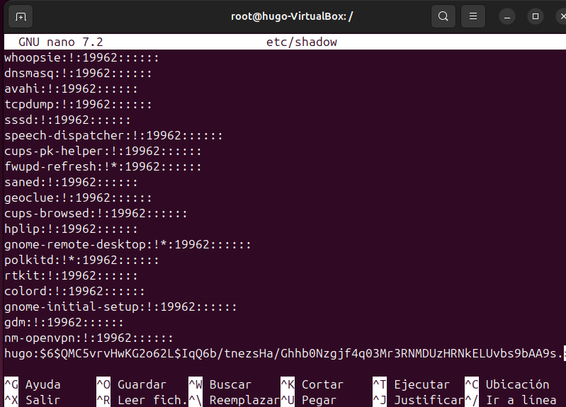
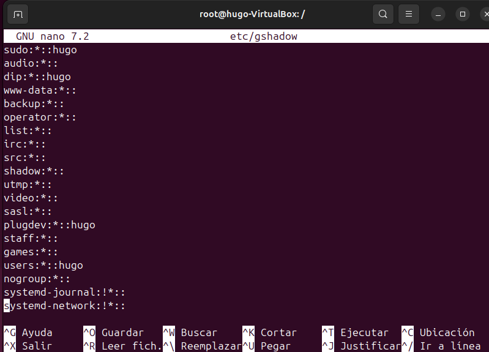
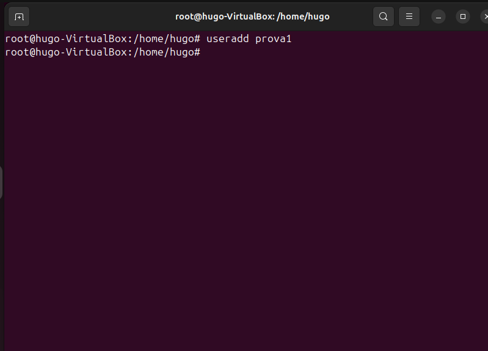
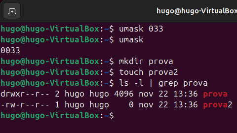
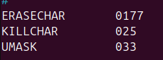
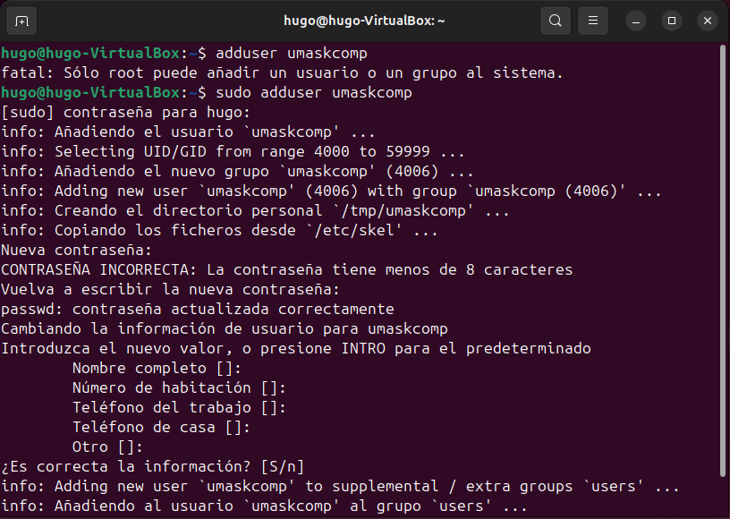

Sprint 2
Gestión de procesos
¿Que es un proceso? Un proceso es una instancia de un programa en ejecución en un sistema operativo. Es decir, cuando ejecutas un programa, el sistema operativo crea un proceso que representa ese programa mientras está funcionando.
TOP
Es un comando que se utiliza para monitorear a tiempo real los procesos que se estan ejecutando en el sistema en ese momento.
pstree
La comanda pstree muestra una representación en forma de árbol de los procesos que se están ejecutando en un sistema basado en Unix/Linux.
ps aux
se utiliza para listar todos los procesos que se están ejecutando en el sistema, proporcionando información detallada sobre cada uno de ellos.
Ctrl+C
Ctrl + C se utiliza para interrumpir o detener un proceso en ejecución en la terminal.
Ejemplo:
Ejecutamos un Ping hacia una IP aleatoria, en mi caso utilizare la 8.8.8.8
Para detener este proceso utilizaremos la combinacion de teclas Ctrl+C y se representara en la terminal de esta manera ^C, esto hara que se detenga el proceso y por lo tanto se dejaran de mandar Pings.

Ctrl+Z
Ctrl + Z se utiliza para suspender un proceso en ejecución y enviarlo al fondo, deteniéndolo temporalmente.
Ejemplo
Haremos el mismo ejemplo que en el caso anterior, le enviaremos un ping a la IP 8.8.8.8.
Para suspender el proceso y enviarlo a un segundo plano haremos Ctrl+Z y se representara en la terminal de esta manera ^Z esto hara que se suspenda el proceso y se mande a un segundo plano.

jobs
El comando jobs muestra una lista de los procesos asociados a la sesión actual de la terminal que están en segundo plano, suspendidos o en ejecución.
Ejemplo
Suspendemos un proceso para poder hacer un ejemplo
Ahora ejecutamos la comanda jobs para ver los procesos suspendidos

fg %
El comando fg % se utiliza para reanudar un trabajo suspendido o en segundo plano y traerlo al primer plano de la terminal, permitiéndote interactuar nuevamente con él.
Ejemplo
Vamos a traer nuevamente el ping que suspendimos anteriormente y pudimos verlo con el jobs.
Para volverlo a traer al primer plano haremos fg % numero_proceso en este caso el numero "1".

kill -9 PID
El comando kill -9 PID se utiliza para forzar la terminación de un proceso identificado por su PID (Process ID).
Ejemplo
Para ver los procesos que tenemos activos ahora mismo vamos a usar el comando ps aux
Y para deter alguno de los procesos que podemos ver en pantalla utilizaremos kill -9 PID.

No sale ningun tipo de mensaje pero si volvemos a hacer ps aux podremos comprobar que ya no aparecera en la lista.
Gestión de usuarios, grupos
Archivos a tener en cuenta
- PASSWD
Ruta: /etc/passwd
Extructura: nombre:contraseña(x):id_usuario(1xxx):grupo_principal(1xxx):nombre_completo:Direccion_Directorio
Funcionalidad: Contiene la información básica de las cuentas de usuario del sistema.
- GROUP
Ruta: /etc/group
Extructura: nombre;contraseña:identificador:(Mas usuarios si hay)
Funcionalidad: Contiene la información sobre los grupos definidos en el sistema.
- SHADOW
Ruta: /etc/shadow
Extructura: nombre_de_usuario:contraseña_cifrada:último_cambio:min:max:aviso:inactividad:expiración:
Funcionalidad: Almacena la información cifrada de las contraseñas de los usuarios, así como otros parámetros relacionados con la expiración y validez de las contraseñas.

- GSHADOW
Ruta: /etc/gshadow
Extructura: nombre_del_grupo:contraseña_cifrada:administradores:miembros
Funcionalidad: Se utiliza para almacenar información de los grupos, incluyendo las contraseñas cifradas de los grupos y los miembros de cada grupo con permisos especiales.

SKEL
Todos los archivos mencionados se encuentran dentro del skel, para poder verlos tendremos que hacer un ls -la ya que todo archivo que tenga un "." antes de su nombre estara oculto y no se vera con un simple ls
/etc/skel -> Carpetas que se crearan cuando un nuevo usuario abra la interfaz por primera vez
.profile -> Este archivo se ejecuta cuando inicias sesión en un shell de login (por ejemplo, cuando accedes al sistema desde un terminal virtual o SSH).
Modificacion -> En este caso indicamos que la carpeta de home del usuario en vez de crearse en el /home se crearan en el /var
.bashrc -> Sirve para configurar cosas como alias, funciones, colores, y otras personalizaciones del shell.
Modificacion -> En este caso estamos creando una modificación de un comando, cuando coloquemos "conexio" se hara un ls -la
.bash_logout -> Este archivo se ejecuta al cerrar sesión en un shell de login.
Modificacion -> En este caso estamos haciendo que siempre que se deslogue se eliminara la carpeta de descargas de los usuarios que tengan la carpeta en /home
VARIABLE: $USER -> actua únicament sobre l’usuari que es deslogea.
Usuarios
Comandos Basicos
Creación de usuarios
Para crear usuarios tenemos 2 comandos los cuales podemos usar useradd y adduser.
useradd:
- Es un comando más básico y de bajo nivel.
- Forma parte de las herramientas de gestión de usuarios de Linux.
- No realiza pasos adicionales ni configura parámetros automáticamente. Por ejemplo, al usar useradd, hay que especificar manualmente la creación del directorio home, los grupos, la shell, y otras configuraciones si no se desea usar los valores predeterminados.
- Ideal para usuarios avanzados que necesitan personalizar cada aspecto de la cuenta.

Creamos su home con el comando mkdir y le entregamos el propietario con el comando sudo chown.
Le añadimos una contraseña al usuario

Le asignamos el Shell predeterminado
Comprobamos que se encuentre en los archivos y en la inteficie grafica:

adduser:
- Es un script de Perl que utiliza useradd internamente.
- Proporciona una interfaz más amigable y realiza varias configuraciones por defecto, como la creación automática del directorio home, la asignación de un grupo por defecto, y la solicitud de una contraseña durante el proceso.
- Es más sencillo y práctico para usuarios que quieren crear cuentas de usuario sin preocuparse por especificar cada parámetro.
RESULTADOS:
Eliminar Usuarios
El comando deluser en sistemas Unix/Linux se utiliza para eliminar usuarios del sistema de manera sencilla.
1 - Eliminar un usuario:
Si se ejecuta sin opciones adicionales, deluser elimina al usuario especificado del sistema, pero deja intactos los archivos del usuario, incluyendo su directorio home.
deluser nombre_de_usuario
2 - Eliminar un usuario y su directorio home:
Usando la opción --remove-home, deluser elimina al usuario junto con su directorio home y su contenido.
deluser --remove-home hugo
3 - Eliminar un usuario y sus archivos:
Con la opción --remove-all-files, deluser elimina todos los archivos de propiedad del usuario, independientemente de su ubicación en el sistema, además del directorio home.
deluser --remove-all-files hugo
4 - Eliminar un usuario de un grupo:
deluser también permite eliminar a un usuario de un grupo específico sin eliminar al usuario del sistema.
deluser hugo sudo
5 - Eliminar un grupo:
También se puede usar deluser para eliminar un grupo utilizando la opción --group.
deluser --group grupo1
Bloquear Usuarios
usermod -L <nom>
cat /etc/shadow
Comprovamos que delante del password aparece un "!" para verificar que se a bloqueado
man usermod (opcions de usermod)
usermod -U <nom>
Desbloquea al usuario por lo tanto desaparece el '!' del /etc/shadow
Otros comandos
-
usermod --shell /bin/bash <nom>(para cambiar el interprete de 'sh' a 'bash') -
mkdir <nom>(crea carpeta para un nuevo usuario) -
chown <nom>:<nom> <nom>(1:usuari 2:grup 3:nom carpeta) -
passwd <nom>(para configurar contraseña) -
usermod -p <contrasenya> <nom>(contraseña con texto plano) -
addgroup <nom>(crea un grupo con su id) adduser <nom> <nombre_grupo>(añade un usuario dentro de un grupo)
GPASSWD
-
gpasswd -a <nom> <nombre_grupo>(añade un usuario a grup) -
gpasswd -A <nom> <nombre_grupo>(hace que un usuario sea admin de un grupo)
USERMOD
-
usermod -a -G <nomg> <nom>(añade un usuario a un grupo y con la '-a' no elige el usuario de otros grupos) -
usermod -G <nombre_grupo> <nombre>(cambia el grupo principal del usuario) -
groupmod -n <Nuevo_nombre_grupo> <nombre_grupo>(cambia el nombre del grupo)
Modificaciones crear usuarios
Los archivos que vamos a modificar en esta parte y los importantes son:
-
/etc/login.defs -> modifica los parametros a la hora de crear usuarios en general.
-
/etc/adduser.conf -> Modifica parametros al usar el comando adduser.
-
/etc/default/useradd -> Modifica parametros al usar el comando useradd.
-
/etc/skell -> Todo lo que se cree dentro de esta carpeta se copiara en las homes de cada usuario creado
Configuracion Skell
En el Skell si haces un ls -la te saldran muchos archivos los cuales estan ocultos y ya explique anteriormente para que servian, en este caso lo que nos va a interesar es crear un enlace para comprovar si se crea en los nuevos usuarios.
Configuración login.defs
Como mencione anteriormente este archivo modifica los parametros defaults a la hora de crear un usuario.

En este caso los parametros que se modificaron son
-
UID_MIN 2000 -> Esto hara que su numero de usuario sea minimo 2000 de manera default seria 1000
-
GID_MIN 2000 -> Esto hara que el numero de grupo sea minimo 2000 de manera default seria 1000
Tambien se modifico este apartado del mismo archivo el cual hara cambios con la contraseña.
- PASS_MAX_DAYS 30 -> Esto hara que la misma contraseña solo se podra tener durante 30 dias, despues se tendra que cambiar
- PASS_MIN_DAYS 5 -> Esto hara que tienen que pasar minimo 5 dias entre cambio y cambio de contraseña
- PASS_WARN_AGE 10 -> Esto hara que te avise 10 dias antes de que te caduque la contraseña.
Configuración adduser.conf
Todo lo que se toque en este archivo cambiara los parametros a la hora de crear un usuario con el comando adduser. Todo lo que se ponga en este archivo prevalece sobre lo que se ponga en el archivo login.defs.

En este archivo se modificaron los siguientes parametros:
- DHOME=/tmp -> Esto hara que las carpetas "home" de los usuarios no se crearan en la carpeta "HOME" sino en la ruta que tu le pongas en este caso en "/tmp"
- FIRST_UID=2000 -> Esto hara que su numero de usuario sea minimo 2000 de manera default seria 1000
- FIRST_GID=2000 -> Esto hara que el numero de grupo sea minimo 2000 de manera default seria 1000
Comprobaciones

Configuración useradd
Todo lo que se toque en este archivo cambiara los parametros a la hora de crear un usuario con el comando useradd

En este archivo viene todo siempre completamente comentado ya que nunca te pide especificaciones a la hora de crear un usuario ya que lo tienes que hacer manualmente.
Lo unico que se descomento es el paraemtro: - SHELL=/bin/bash -> Esto determina el SHELL de cada usuario creado con useradd en este caso seria /bin/bash.

Igualmente las modificaciones que se seguirian en la creación de un usuario con useradd serian las indicadas en el archivo login.defs
Permisos
Taula Permisos Decimal

Permisos Normals
PRUEBAS Para hacer las pruebas creamos un grupo y usuarios, añadimos a 2 de los usuarios creados dentro del grupo en este caso se llama “parchis”
Metemos 2 usuarios al grupo:

chgrp
Creamos la carpeta “prova” con un archivo en el interior llamado “hola” y le modificamos los permisos añadiendo al grupo parchis.

Añadimos al grupo como propietario:
 El comando que utilizamos es
El comando que utilizamos es chgrp
Estructura: chgrp [Parametre] [Grup] [Directori/archiu]
En nuestro caso utilizamos “-R” esto hara que sea recursivo, es decir que todo lo que haya en el interior de la carpeta tambien se le aplicaran los permisos.
CHMOD Ahora cambiamos los permisos tambien para el resto de grupos/usuarios/

Orden: Usuario-Grupo-Others
Estructura: chmod [Parámetro] [Permisos que quieres otorgar] [Carpeta]
En nuestro caso utilizamos “-R” esto hará que sea recursivo, es decir que todo lo que haya en el interior de la carpeta también se le aplicarán los permisos.
PRUEBAS GROC (Permisos Ususari)


Podemos comprobar que con la configuración que le hemos dado GROC al tener permisos de usuario puede hacer lo que sea dentro de la carpeta.
PRUEBAS VERDE (Permisos Grup)

Podemos ver que “Verd” ya que tiene los permisos de grupo únicamente podrá entrar y ver el contenido del interior del directorio, pero no podrá modificar nada de su interior ni ver el contenido de los archivos del interior.
PRUEBA ROIG (permisos Others)

Podemos ver que “Roig” ya que tiene los permisos de Others no podrá ni acceder ni modificar el interior del directorio,
Permisos Especials
Para comprobar los permisos especiales utilizaremos una carpeta llamada Compartida, queremos que en esta carpeta todos los usuarios dentro del grupo de parchís puedan subir sus archivos y ver el interior pero no pueda eliminar los archivos del resto.
Creamos la carpeta

Sticky:
Utilizaremos el chmod, le añadiremos unos permisos normales “757” pero le colocaremos un “1” delante, esto hace que se le apliquen todos los permisos al grupo de Others pero no puedan eliminar documentos de otros usuarios.

Comprobaciones:
Creo 2 carpetas con el usuario “Roig” para comprobar que puede crear archivos en el interior de la carpeta, seguidamente compruebo que el puede eliminar sus propios archivos.
Ahora cambio al usuario “Blau” y compruebo que puede crear sus archivos y que no puede eliminar los de Roig.
Llista de control d'acces
Para crear la lisa de controles utilizaremos el comando:
getfacl [Nombre archivo]
El comando getfacl en Linux se utiliza para mostrar las Listas de Control de Acceso (ACL) de archivos y directorios.
setfacl
Este comando nos servirá para hacer excepciones sobre carpetas a usuarios en concreto o grupos en concreto
Estructura: setfacl -m [user/group]:[usuari/grup]:[permisos] (nom carpeta)
Comprobaciones

Otros parametros
setfacl -b (archivo) → Sirve para eliminar todas las excepciones que esten en un archivo/directorio

setfacl -x (usuario) (directorio) → Sirve para eliminar las excepciones de 1 usuario en concreto sobre 1 directorio.

Permisos umask
umask -> comprobar la máscara que tienes
La mascara 022 = máscara del root
umask (numero) -> Te cambia la máscara al numero que tu le asigne

- Dependiendo el número de mascaras indicará los permisos que se le otorgaran a los directorios y archivos.
Para calcular la mascara:
Para calcular los permisos que dará una máscara hay que hacer la operación ahn con números binarios entre los permisos que se otorgan de manera default en el SO en el caso de los directorios (777) y en el caso de los archivos (640), seguidamente tienes que pasar a binario la máscara que tengas en nuestro caso 002 despues hacerla a la inversa es decir los 0->1 y 1->0, después al realizar el cálculo ahn hay que volver a invertir la máscara que nos dará es decir los 0->1 y 1->0, seguidamente pasamos nuevamente de binario a decimal y esa sera la máscara que tendremos que usar.
Modificar umask para nuevos usuarios:
Usaremos el archivo /etc/login.defs
Modificaremos el parámetro UMASK -> 022 al número que nosotros queramos.

Creamos el nuevo usuario para comprobar que se a cambiado:

Sistemes de fitxers i particions
COMANDES:
fdisk -l-> Da información sobre los discos del sistema operativo.
tune2fs -l (partició)-> Sabremos la mida del Block que tiene servida la partición.
df -T -> Sirve para ver todas las particiones que tenemos y el sistema de archivos y mas información.
du -sh (archivo) -> Sirve para obtener información sobre el tamaño de un archivo o directorio en un formato más fácil de leer para las personas.
e4defrag -c (partición) -> Es un desfragmentador de Linux, con el parámetro “-c” únicamente dará información necesaria para saber si tenemos que desfragmentar el disco.
e4defrag (partición) -> Sirve para comenzar a desfragmentar
Estructura de la informació:
Mida sector y block:
El sector es la unidad mínima física donde se guardan los datos y por defecto son 512 bytes y el sistema operativa no trabaja en sectores trabaja en blocks y los blocks es la unidad mínima lógica donde se guardan los datos por defecto. El tamaño del sector no se puede cambiar viene definida de fábrica, pero el tamaño del block si que se puede cambiar cuando formateamos la partición.
Fragmentació interna:
La fragmentación interna es toda esa parte desaprovechada de los blocks porque no se acaban de llenar.
La fragmentación interna se puede solucionar disminuyendo o aumentando la medida del block pero siempre hay que tener en cuenta que bajará el rendimiento ya que los archivos estarán más fraccionados
Fragmentació externa:
La fragmentación externa cunado baja el rendimiento del sistema porque los archivos no se guardan en bloques continuos en la memoria, lo arreglamos con la desfragmentación.